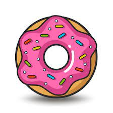

Donuts Created : 0
Donuts needed for the Auto Clicker : 0
Click on Donut image to Create Donut
Total Auto Clicker purchased : 0
Fred the Baker Baking Company
The inspiration for this game, Cookie Clicker
Donut Clicker is a clicker game where you bake donuts by clicking. You can spend your donuts to upgrade your clicking power, idle income, and buy auto-clickers. The game has lots of features and an online leaderboard where players compete to be the biggest earners!
- Donut Count
- Auto Clicker
- Auto Clicker Count
- Auto Clicker Cost
The number of Donuts you have created by clicking, either manually or with an Auto Clicker.
Auto Clickers will automatically click for you every second, so you don't have to click manually.
The number of Auto Clickers purchased. Auto Clickers apply one click per second for every Auto Clicker purchased.
The number of donuts required to purchase an Auto Clicker. Starting cost is 100 donuts. For each Auto Clicker purchased, the cost of the next Auto Clicker increases by 10%.
Ajay Patel, Copy Right @2023